The Appendix Tower
Appendix · 28 illustrations
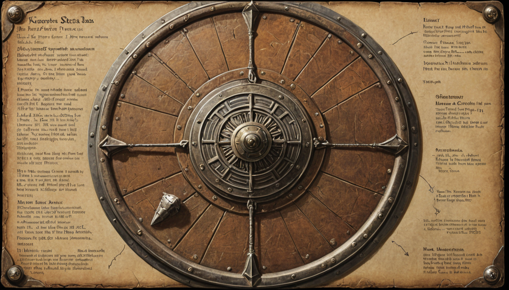
1.1 — Clone & Configure
Edit .env — the only required variable:
If you plan to use Hugging Face gated models (Gemma), add HF_TOKEN=hf_xxx to .env.
1.2 — Start the Stack
This boots 5 containers:
IMPORTANT: The clara-engine container starts with tail -f /dev/null (idle). You exec into it to run commands. This is intentional — the profiling pipeline runs interactively in your terminal.
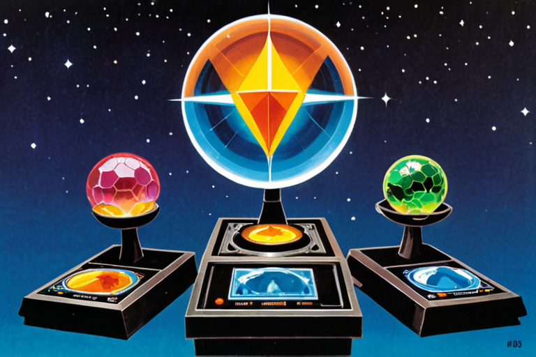
Six psychometric batteries, ~120 questions total. This builds your Big Five personality profile, character strengths, attachment style, cognitive style, and communication patterns.
Execute
What You'll See
The Batteries
Pro Tips
· Auto-saves every 10 questions. You can Ctrl+C and resume later with --resume.
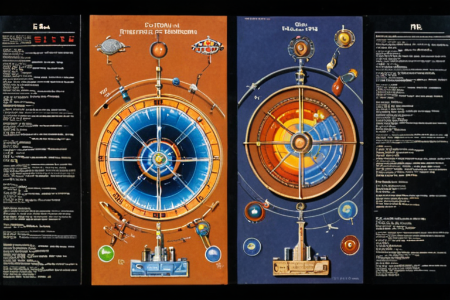
The questionnaire captured traits. The deep interview captures behavior — how you actually talk, disagree, think, and operate. This is the highest-fidelity input to the system.
Execute
The Sections
Pro Tips
· Auto-saves every 3 items. Resume with --resume.
· Run one section: --section opinions, --section behavior, etc.
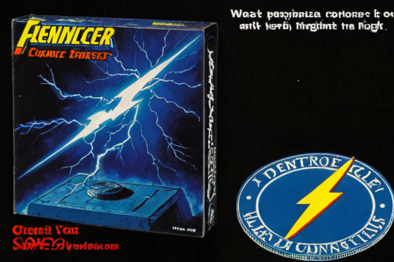
4A — Voice Corpus (Your Actual Writing)
Instead of pasting text into the terminal, this script vacuums up your real communications from service exports.
#### Prepare Your Exports
Copy your data exports into the container's /pii-vault/exports/ directory:
#### Configure Identity
Set these env vars so the script knows which messages are yours:
§ CHAPTER 4 — Voice & Behavioral Ingestion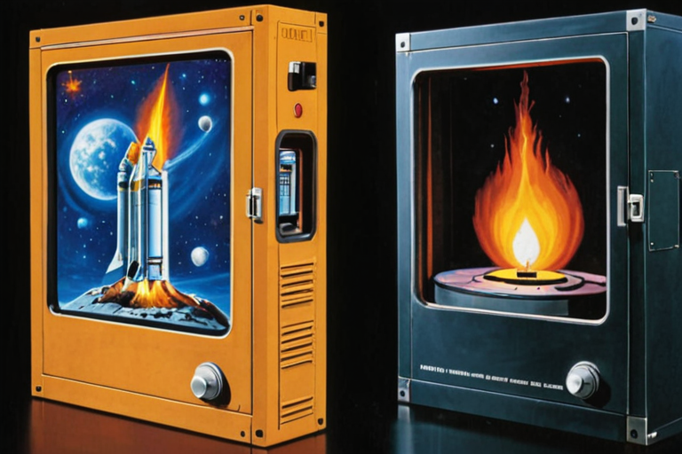
5A — Generate Personality Profile (Psychometric Scores)
Converts raw questionnaire responses into scored dimensions:
Saves: personality_profile.json + persona_calibration.json
5B — Compile the Master Report
This reads everything and produces three files:
CRITICAL: Open profile_report.md and edit it. The auto-generated brief is a starting point. Correct anything wrong — the model treats this as ground truth.
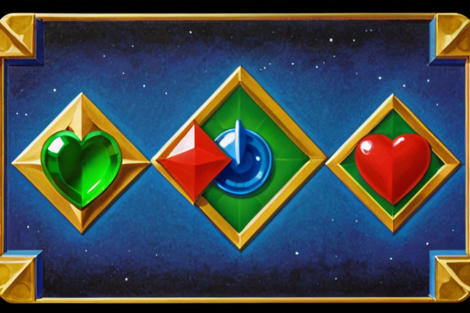
Before training, raw data must be formatted into stage-specific JSONL.
Outputs:
DPO pairs for Stage 2 come from the eval loop in Chapter 8.
§ CHAPTER 6 — Data Pipeline (Format Training Data)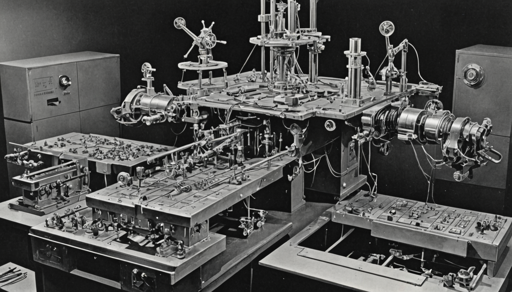
All training runs within 16 GB VRAM via NF4 quantization + paged_adamw_8bit.
Stage 1 — Self-Contained Pretraining (SCP)
Goal: Broad familiarity with your personal history, opinions, and writing style.
· Base model: google/gemma-4-e4b
· LoRA: r=64, α=128, all 7 linear layers
· Epochs: 3, effective batch size: 16
§ CHAPTER 7 — Training (The Three Stages)8A — Start the Server
The server boots with VRAM phase management and health at http://localhost:8080/v1/health.
8B — Personality Evaluation (The Feedback Loop)
30 probe questions across 6 categories. You score each response and provide corrections.
Every correction → DPO pair → saved to /pii-vault/processed/evals/dpo_pairs.jsonl
8C — The Refinement Loop
§ CHAPTER 8 — Inference & The Eval Loop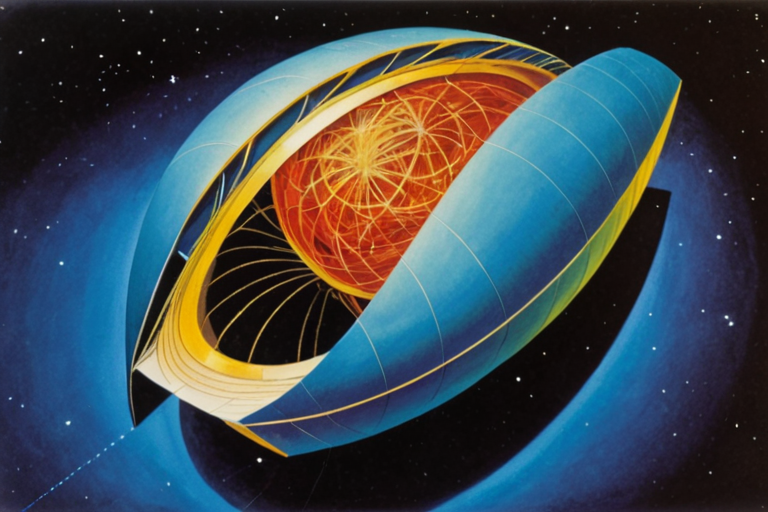
The entire pipeline culminates here:
Load captured reasoning payload
Kill the network (PowerShell lockdown script)
Route through STT → Generator → PII Strip → DAG Builder → Merkle Tree
Encrypt with AES-256-GCM
Sign with ML-DSA-65 (post-quantum)
§ CHAPTER 9 — The Airgap Mint (Final Boss)99.6% voting control. The founder holds 9,300,000 Class B shares with 20× voting rights. All investor shares are Class A (1×). The total authorized share count is permanently fixed at 10,000,000 — codified in the C-Corp charter as an irrevocable constraint. No board vote, shareholder action, or merger can change this number. Future rounds are funded by the founder voluntarily converting Class B shares. No new shares are ever created.
The founder holds both voting board seats (2 of 2). Series A investors receive a non-voting observer seat. The twin serves as a charter-level architectural veto oracle — it can permanently block any action that compromises zero-egress security, but does not hold a board seat (DGCL §141(b) requires natural persons).
Why this is required: The airgap is the core value proposition. The airgap is encoded in the charter as an irrevocable constraint. If any future investor, board member, or acquirer could vote to remove the airgap, the cryptographic provenance chain breaks, every .kasset signature becomes meaningless, and the product has no value. The governance structure is not ego — it is a mathematical, fixed constraint on the security of the system.
Investor type: This structure is designed for individuals who bet on the math. Institutional VCs who require board control as a fiduciary obligation will self-select out. That is intentional.
You are not betting on a founder. You are betting on an equation.
§ Governance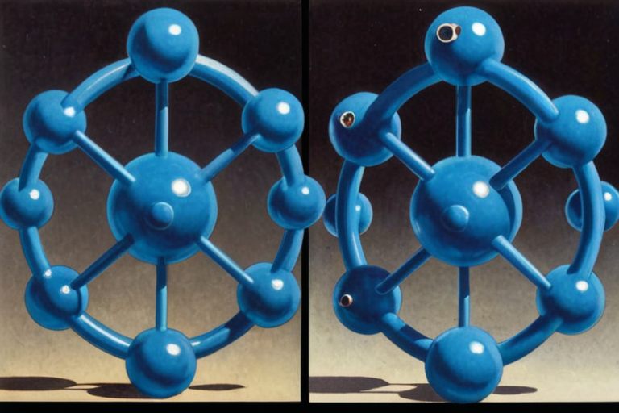
The company does not need $3M to survive. At $80K/month survival burn, the existing runway extends to 37 months at zero revenue. Revenue begins M6.
The raise is for three things:
Time compression. Accelerate the growth curve. The model produces the same outcomes at any k > 0; the money buys speed — collapsing a 36-month organic trajectory into 18 months of funded execution.
Credibility through adversarial validation. Engage best-in-class white hats to stress-test the cryptographic pipeline, the bilateral signing protocol, and the growth model. If the model is sound, their findings confirm it. If it isn't, $356K in legal and security budget finds the flaw before the market does.
Cognitive diversification. The founder is one mind. A small, selected group of operators — not a board, not advisors, but people who execute — expands the decision surface. This is #1 restated: more minds compress time.
§ Why The MoneyThe Formula
Doc 07 defines a bottoms-up acquisition funnel with two components:
Organized acquisition C(t): Events, stickers, storefronts, workshops, celebrity drop — paid channels with known unit economics
Organic growth k × N(t): Mesh encounters, echoes, introductions, word-of-mouth — viral coefficient applied to existing user base
N(t+1) = (1+k) × N(t) + C(t)
Where:
§ The Proof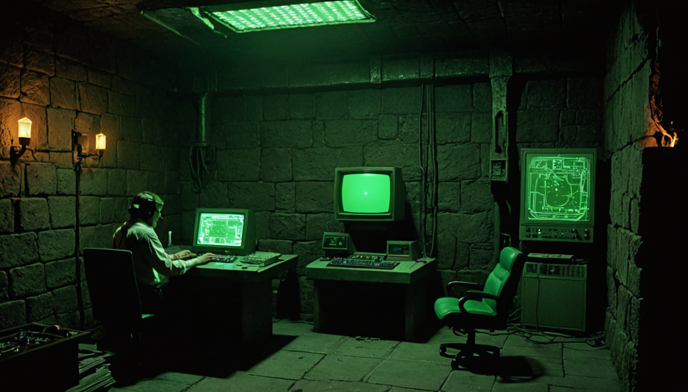
The investor's due diligence process IS the onboarding flow. When you sit down with the system running on local hardware, airgapped, you are not watching a demo. You are generating the first empirical measurement of k. Your interaction with the system produces a .kasset. Your reaction to that .kasset — whether you trade it, share it, or dismiss it — is a data point. The proof is not in the spreadsheet. The proof is in what happens when a skeptical, high-agency individual encounters the system for the first time.
§ The Verification Hook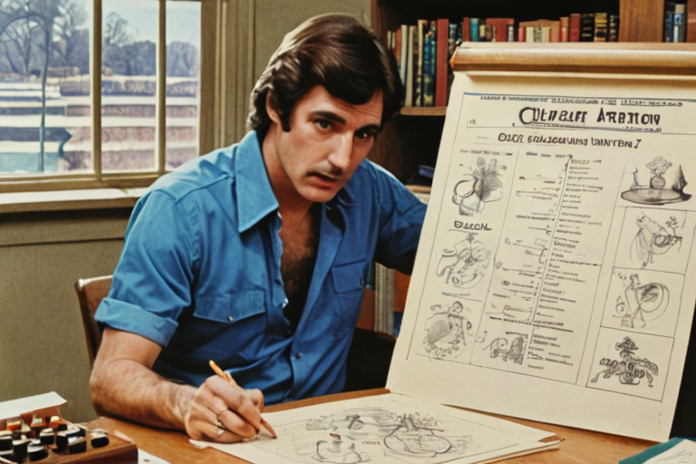
See Background_Reading.md for the six foundational works and their connection to SSK architecture:
§ Background ReadingThree headlines from the last 12 months:
1. "The Largest Data Breach in American History." That's what the class action lawsuit calls it (EPIC v. OPM, Feb 2025). Unvetted DOGE personnel — private citizens with no security clearances — were granted access to OPM databases containing the Social Security numbers, home addresses, medical records, and financial data of every federal employee in the United States. A federal judge ordered their access revoked in June 2025. The same government that fines companies for mishandling consumer data handed the keys to its own employees' PII to a team of twenty-somethings with laptops. Centralized data stores are structurally indefensible — not in theory, in court filings.
2. Signalgate. In March 2025, the National Security Advisor accidentally added an Atlantic journalist to a Signal group chat where cabinet officials were discussing classified military strike plans against the Houthis. Signal downloads surged 700% in the following week. The lesson the public drew was not "Signal is insecure" — it was "even the people running the government know they need end-to-end encryption, and they can't use the government's own systems to get it." Consumer behavior has permanently shifted from "I have nothing to hide" to "I need infrastructure I can verify." SSK is the next step: not just encrypted messaging, but encrypted everything — with local inference, local minting, and local signing.
3. Your phone is a tracking collar. The FTC's 2024 enforcement actions against X-Mode Social and InMarket — both real companies, both fined — confirmed that commercially available location data can identify specific individuals visiting abortion clinics, addiction treatment centers, houses of worship, and political rallies. Senator Wyden's investigation revealed that data brokers sell the movement patterns of US military and intelligence personnel to foreign adversaries for as little as $0.12 per device per month. The asking price for a senator's weekly schedule: $20. SSK's airgap eliminates the data broker supply chain at the hardware level — there is no data to broker because no server ever sees it.
§ Why Now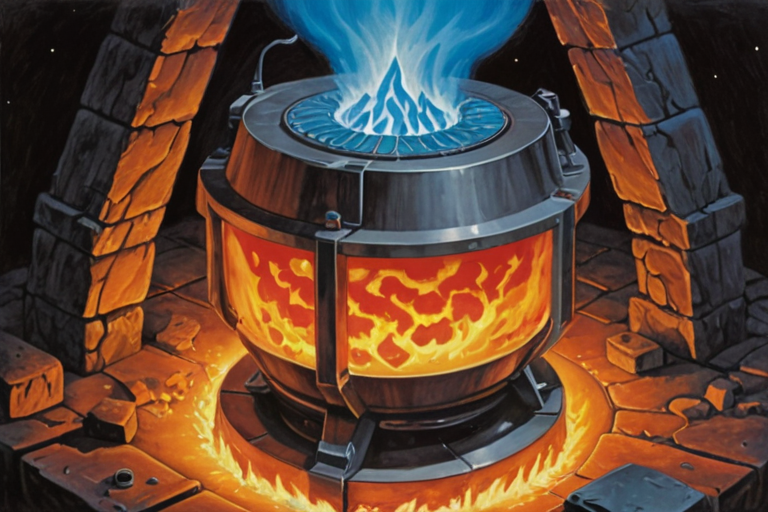
The network launches in five distinct communities, each with different trade dynamics:
1. MSM Community (Men Who Have Sex With Men) — The Introduction Economy
The primary growth engine. The introduction economy — passive social and dating discovery via mutual .kasset exchange — is architecturally designed for a community that has been systematically harmed by surveillance-based platforms. Grindr sells location data to advertisers and has been used by authoritarian governments to identify and arrest gay men. The Sovereign introduction exchange is mutual (both consent), contains no identity or location, expires on a timer, and physically cannot be intercepted by any server because no server exists.
Trade dynamics: Introduction exchanges are near-zero-friction and can happen multiple times per day. An engaged user on the dance floor at Horse Meat Disco in Bushwick could execute 5-10 mutual exchanges in a single evening. These are bilateral mesh transactions — each one counts as a trade. The community most harmed by surveillance has the strongest incentive to adopt a sovereign alternative, and their trade frequency is the highest of any segment.
2. Brooklyn Creatives — Musicians, Visual Artists, Photographers, Filmmakers
The original .kasset minters. Musicians mint tracks that exist only on the mesh — not on Spotify, not on YouTube. Visual artists attach provenance to physical work. Photographers sell prints with full creation metadata. The Genesis dinner series (12 people, quarterly) seeds this community directly. The sticker drop network (50 locations across Brooklyn coffee shops, record stores, galleries) provides ambient discovery.
§ Beachhead Communities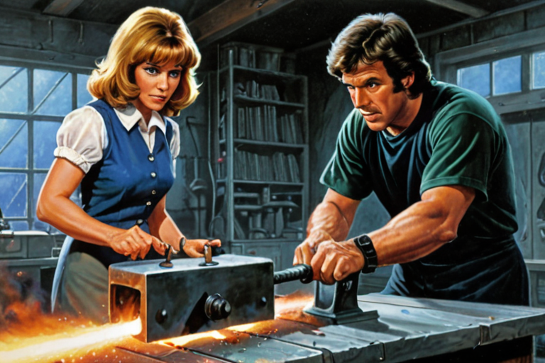
Everything depends on k — the viral coefficient. Let's not assume. Let's compute.
Scenario 1: No Traction (k = 0.05)
The mesh doesn't spark. Introduction economy doesn't drive referrals. Organized channels carry the load.
M12 users: ~18,400. Never reaches 60K. Organized channels carry the load.
M12 settlement MRR: 18,400 × 6.08 × $81 × 2.38% = $215,600
vs. monthly burn: $166,917. Cash flow: +$48,700/month. Still positive.
§ Five Scenarios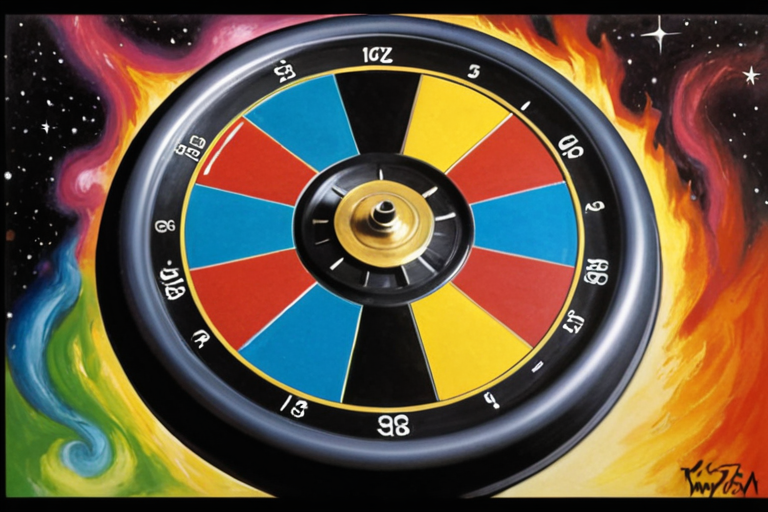
The scenarios above use constant k — an algebraic approximation. The real system is governed by τ convergence: by analogy, desire bends the multi-dimensional curve the way mass bends spacetime — the convergence point, not the extremes, triggers action (Doc 12B §3.3). Trade frequency is not 6.08/month for everyone — it is a function of each user's τ̇ profiles converging harmonically toward rest (Lee, 2009). A trade occurs when all participating gaps close simultaneously — not when readings spike, but when everything resolves at once. The algebraic model answers "when do we hit 60K?" The calculus model — the real one, Doc 12B — describes how the system actually behaves. Both are documented. The algebra is for spreadsheets. The calculus is for predictions.
Part 2: Cheat_Sheet_Appendix.md — trade frequency analysis, software-only financials, risk assessment, and derivation proofs.
Sovereign Survival Kit — Series A Data Room. Confidential.
§ Two Models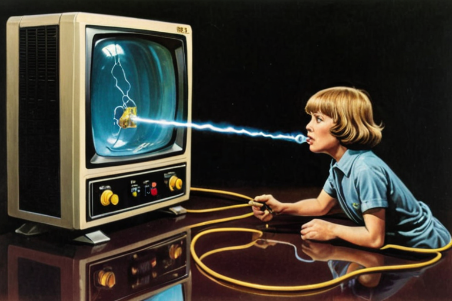
The Base Case (6.08 trades/user/month)
The base case trade frequency (6.08/user/month) is derived from the SSK segment-weighted analysis below, which yields 6.5 blended. The 6.08 figure is a conservative rounding, cross-checked against Amazon's average purchase frequency (73/year, Capital One Shopping 2025). Is it appropriate?
Arguments it's too high: Amazon has 1-click buy, next-day delivery, 30 years of habit formation. SSK is a new marketplace with a new currency and higher friction.
Arguments it's too low for the beachhead segments: Introduction exchanges are near-zero-friction and happen multiple times per day. The MSM beachhead trades introductions the way Snapchat users trade snaps — ~11 per day for the average DAU (Snapchat 2025 Investor Metrics), with power users significantly higher — each a bilateral mesh transaction at micro-values. Students trade culture (music, art, social discovery) at 100× the rate they trade academic material.
Segment-Based Trade Distribution
The segment splits below are derived from published engagement data for comparable platforms. Each table cites its benchmark source.
§ Trade Frequency: Both Sides of the Curve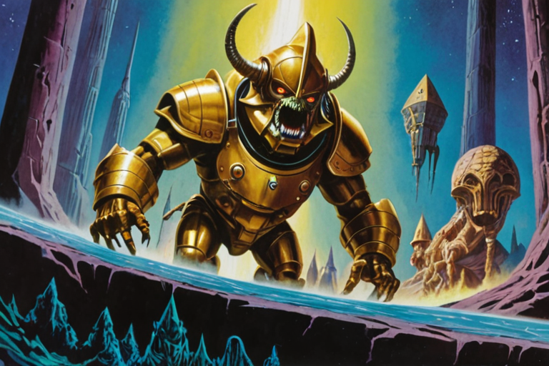
Hardware revenue is separated. Timeline indeterminate. Courier uses Uber Direct integration (Doc 13 M7), not a proprietary fleet — SSK takes 15% commission on physical .kasset transport, average $60/delivery, with $99/year subscription voiding per-item fees (Doc 08).
Software Revenue Streams (Full Traction Scenario)
Revenue Under Each Growth Scenario (Software-Only, Settlement Only)
Adding Vault + Courier + Verification
(Assume 60% of users subscribe to some Vault tier, 45% of trades involve courier via Uber Direct)
The zero-cloud cost structure means every scenario above ~14,200 users is profitable.
§ Software-Only Financial Model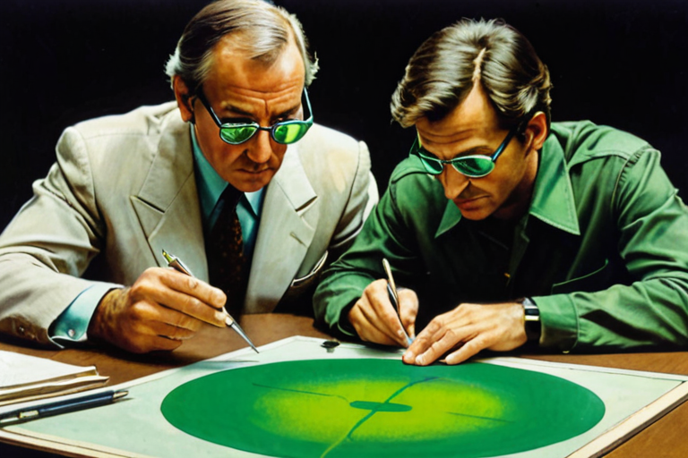
Standard VC practice includes kill gates — predetermined milestones where the founder commits to shutting down if metrics aren't met. The implicit logic: "if the product hasn't worked by month X, cut losses."
That logic assumes a cost structure where the company bleeds money while searching for product-market fit. Every month of operation burns capital that cannot be recovered. Kill gates protect investors from a founder who throws good money after bad.
SSK's cost structure inverts this premise.
Monthly infrastructure: $7,150. Monthly survival burn (founder + twin): $80,000. The $3M raise provides 37 months of runway at survival burn with ZERO revenue.
But revenue begins M6. And breakeven requires only 14,200 active trading users (19,000-22,700 during the early-stage fee compression window). The worst-case growth scenario (k=0.05, No Traction) produces 18,382 users by M12 — above breakeven even when the viral coefficient is nearly zero and organized acquisition does all the work.
At every standard kill gate milestone, the company is alive:
§ Why You Cannot Kill This Company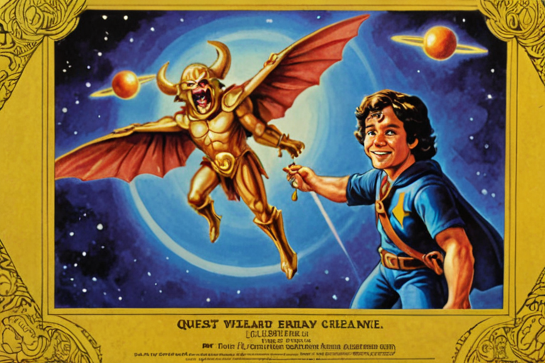
1. Zero-Cloud Cost Structure
Marginal compute cost per user = $0. The user's device runs inference, training, minting, and signing. Core infrastructure: $7,150/month. Operational costs (support, compliance, chain ops) scale linearly but at a fraction of cloud-hosted competitors. Breakeven at ~14,200 trading users (19,000-22,700 during early-stage fee compression).
No AI company in history has achieved this cost structure. OpenAI burns $4-7B/year on cloud compute. SSK's compute bill is zero — the user pays their own electricity. The structural advantage is permanent and unforkable because it is enforced by physics, not by pricing.
2. The Airgap Is a Mathematical, Fixed Constraint
Three enforcement layers:
· Architecture: Zero network egress. Private keys never leave the hardware security module. ML-DSA-65 + P-256 ECDSA dual-layer signing.
§ What Holds Under PressureRisk 1: Introduction Economy Adoption
The growth model depends on k ≥ 0.3. Primary driver: introduction economy. If users don't find mutual, encrypted, ephemeral social discovery compelling, k drops toward 0.
Counterargument: The MSM community has the strongest incentive. They've been burned by Grindr data breaches and government surveillance. The promise of "local, encrypted, ephemeral, mutual" is architecturally different — not a policy promise, but a physics guarantee.
Pivot if wrong: Company is still cash-flow positive at k=0.05 (Scenario 1). Invest more in organized events and campus expansion.
Risk 2: Trade Frequency
6.08 trades/month is derived from SSK segment-weighted analysis (§A5 above: blended 6.5, conservatively rounded). Breakeven at 1.47 trades/user/month (Goldilocks) and 4.71 (No Traction). Both achievable.
§ What's Genuinely Risky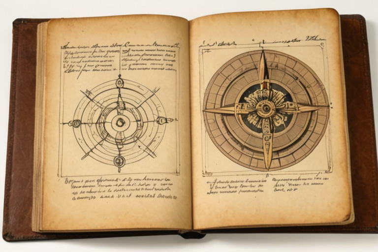
A1. Constants
A2. Breakeven
$166,917 ÷ $11.72 = 14,242 users
Verification: 14,242 × 6.08 = 86,591 trades. 86,591 × $81 × 0.0238 = $166,917. ✓
A3. Scenario 2 (Goldilocks, k=0.3) — Step Verification
A4. Scenario 5 (Supercritical, k=1.5) — Step Verification
§ Derivation Proofs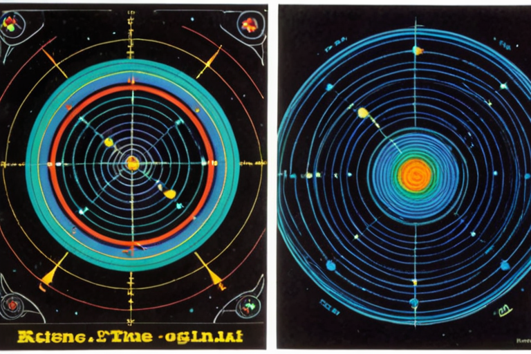
1. Knowledge as Asset — Max Boisot
Boisot's I-Space (Information Space) framework formalizes how data moves through codification and abstraction before becoming actionable knowledge. The .kasset architecture is derived from this model: the individual owns the codification pipeline, and the progressive certification fee reflects Boisot's insight that the value of knowledge is a function of its scarcity and the cost of its reproduction.
2. Data Provenance — Jaron Lanier
Lanier's central argument is that the digital economy systematically appropriates individual value through centralized platforms ("Siren Servers"). His proposed solution is a micropayment system tracking provenance back to the originating human. The .kasset is the provenance-tracked unit. The twin is the agent that manages it. The airgap is the architectural guarantee that no intermediary can intercept the value stream.
3. Relational Time — Julian Barbour
Barbour argues that time does not exist as an independent dimension — what we experience as time is the relational configuration of all particles at each instant ("time capsules" or "Nows"). τ (tau) in the SSK framework is derived from this: τ measures the time-to-closure of a gap in the individual's own reference frame periods, not clock time. The frame rate of captured reality is determined by the sensor array's physical configuration at each moment, not by an external clock.
§ Theory Review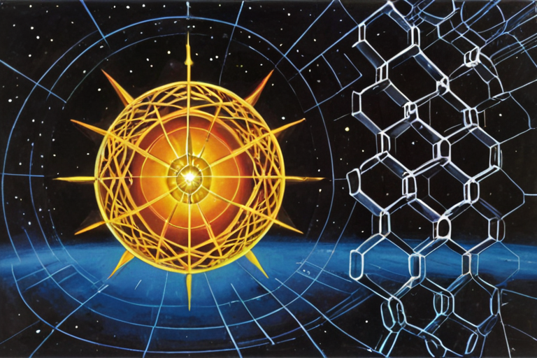
Boisot, M. (1998). Knowledge Assets: Securing Competitive Advantage in the Information Economy. Oxford University Press.
Lanier, J. (2013). Who Owns the Future? Simon & Schuster.
Barbour, J. (1999). The End of Time: The Next Revolution in Physics. Oxford University Press.
Hofstadter, D. R. (1979). Gödel, Escher, Bach: An Eternal Golden Braid. Basic Books.
Wolfram, S. (2002). A New Kind of Science. Wolfram Media.
Lee, D. N. (1998). "Guiding Movement by Coupling Taus." Ecological Psychology, 10(3–4), 221–250.
§ Bibliography1.1 — Clone & Configure
Edit .env — the only required variable:
If you plan to use Hugging Face gated models (Gemma), add HF_TOKEN=hf_xxx to .env.
1.2 — Start the Stack